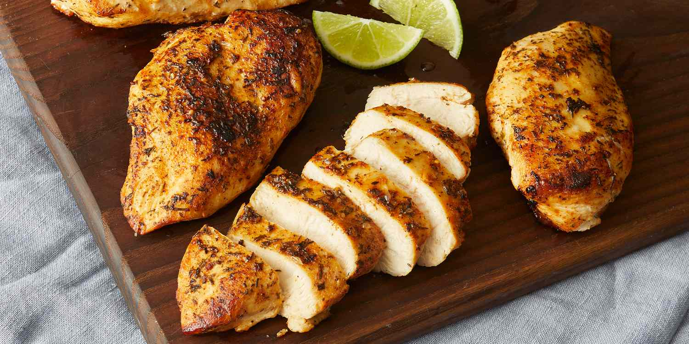

garlic lime chicken
- 3/4 teaspoon salt
- 1/4 teaspoon black pepper
- 1/4 cayenne pepper
- 2 1/4 teaspoons garlic powder, divided
- 1/4 teaspoon dried thyme
- 1/4 teaspoon dried parsley
- 1/8 teaspoon paprika
- 1/8 teaspoon onion powder
- 4 boneless, skinless chicken breast halves
- 2 tablespoons butter
- 1 tablespoon olive oil
- 3 tablespoons lime juice

directions:
- mix together salt, black pepper, cayenne, 1/4 teaspoon garlic powder, thyme, parsley, paprika, and onion powder in a small bowl. sprinkle spice mixture generously on both sides of chicken breasts.
- heat butter and olive oil in a large heavy skillet over medium heat. sauté chicken until golden brown, about 6 minutes on each side. sprinkle with remaining 2 teaspoons garlic powder and lime juice. Cook 5 minutes more, stirring frequently to coat evenly with cooking juices.